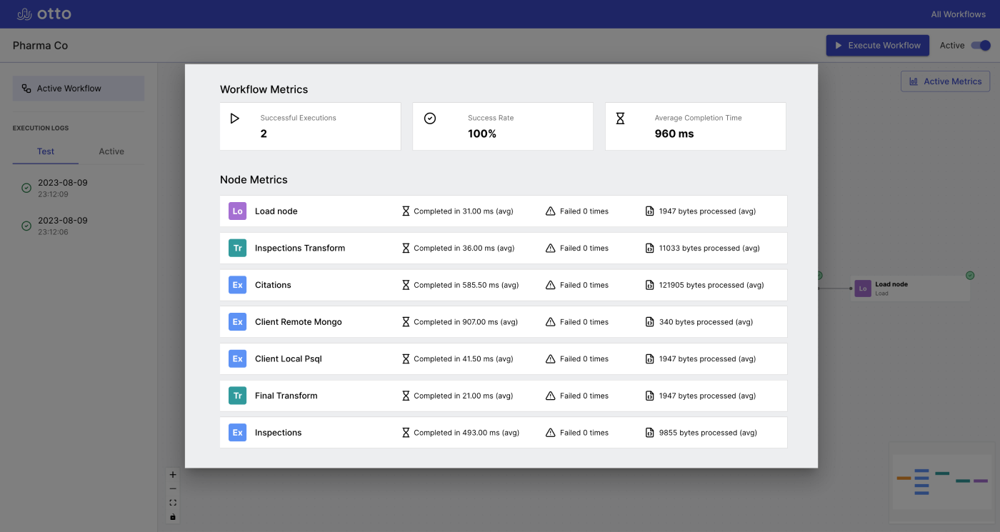

A better way to build ETL pipelines
Otto is an open source ETL automation tool designed for Javascript developers

Why use Otto?
Otto allows you to extract, transform and load data within an intuitive node-based UI. Build automated workflows that are executed at scheduled intervals and track your workflows' performance with logging and metrics.
ETL Features
Schedule
Schedule workflows to run at regular intervalsExtract
Extract data from various sources. Integrations include PostgreSQL, MongoDB and API requests.Transform
Transform extracted code using an integrated code editor and JavaScript.Load
Load transformed data into a PostgreSQL database.Logging
Workflow logs allow you to review previous executions and diagnose workflow failures

Metrics
Metrics allow you to view the performance of your workflow and pinpoint issues when things go wrong
